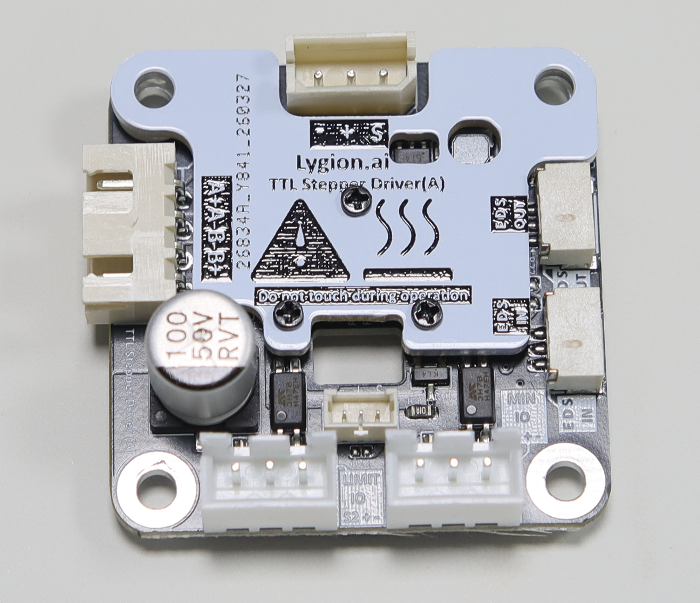
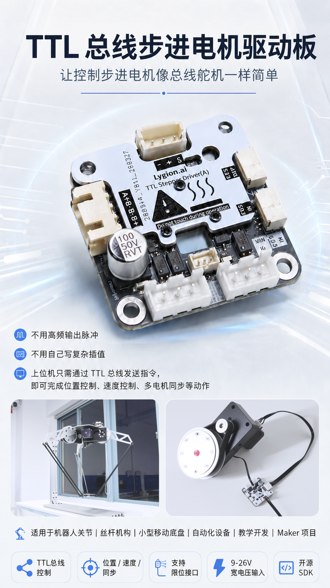
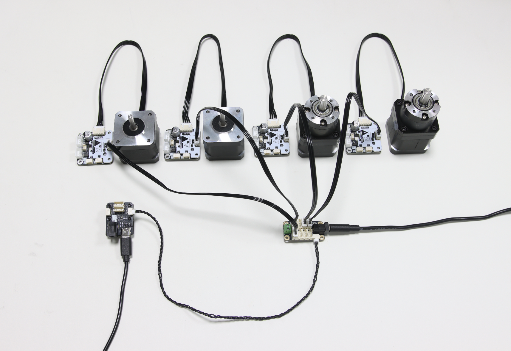

位置、速度、从动三种模式
支持多圈角度控制、连续转动与多电机完全同步动作，覆盖关节、车轮和丝杆等常见场景。
TTL bus stepper motor driver
让控制步进电机像控制总线舵机一样简单。上位机只需发送位置、速度和电流等指令，驱动板在底层完成脉冲输出与速度插值，适合机器人关节、丝杆机构、小型移动底盘和自动化设备。
Wiki 链接暂时保留，后续可替换为正式资料地址。

解决什么问题
传统方案需要上位机持续输出脉冲并自行处理加减速。TTL Stepper Driver (A) 把常用运动控制、状态反馈与保护功能放到驱动板中，让控制器把算力留给路径规划和上层应用。
支持多圈角度控制、连续转动与多电机完全同步动作，覆盖关节、车轮和丝杆等常见场景。
默认 1Mbps，设备 ID 可独立设置，可与灵影 TTL Encoder 及飞特 STS、HLS 系列设备共用总线。
通过加速度参数实现平滑启停；通信中断时可自动停止连续转动，降低失控风险。
最大、最小位置各有独立限位接口，在驱动底层阻止电机继续向触发方向运动。
同步输入和输出接口可让多个驱动板控制的步进电机保持一致动作，适合双丝杆或多轴联动结构。
可读取位置、速度、电压、温度和运行状态，并支持过压、欠压、过热、过流及自动限流保护。
三种控制模式


接入现有控制系统
PC、树莓派、Jetson 或 RK 平台可通过 USB 连接 TTL Adapter (A)；ESP32、STM32 等控制器可使用 UART 转单线 TTL 电路，或通过灵影 Robot Driver 接入。扩展多台驱动板时，可使用 TTL-5264 8P Hub (A)。
接口配置
| 5264-3P ×1 | 电源输入与单线 TTL 总线通信 |
|---|---|
| XH2.54-4P ×1 | 双极步进电机 A+、A-、B-、B+ |
| XH2.54-3P ×2 | 最小位置和最大位置限位开关 |
| GH1.25-3P ×2 | 同步控制信号输入与输出 |
| HC1.25-3P ×1 | 将灵影 TTL Encoder 编码器并入同一总线；驱动板不处理编码器读数 |
技术参数
| 适用电机 | 双极步进电机 |
|---|---|
| 输入电压 | DC 9-26V |
| 最大相电流 | 1.5A |
| 通信 | 单线 TTL，总线默认 1Mbps |
| 控制模式 | 位置模式、速度模式、从动模式 |
| 微步 | 1、1/2、1/4、1/8、1/16、1/32 |
| 反馈 | 当前位置、当前速度、输出脉冲、电压、温度、移动标志、目标位置等 |
| 保护 | 过压/欠压、过热、过流、自动限流、限位、心跳保护 |
| 包装清单 | 驱动板 ×1、5264-3P 连接线 25cm ×1、步进电机连接线 25cm ×1 |
资料与开发
Wiki 页面将提供最新教程与下载资料。